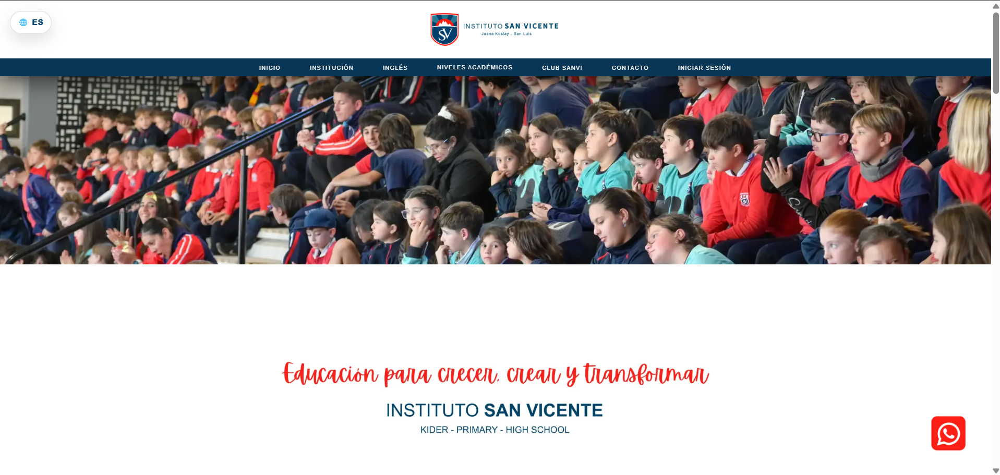
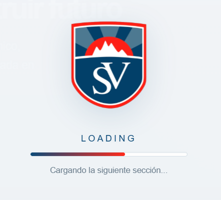
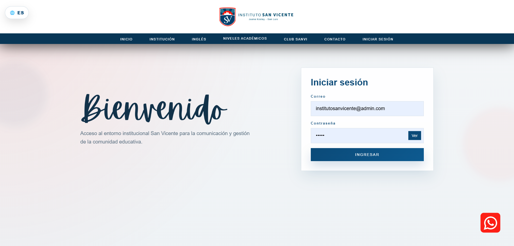
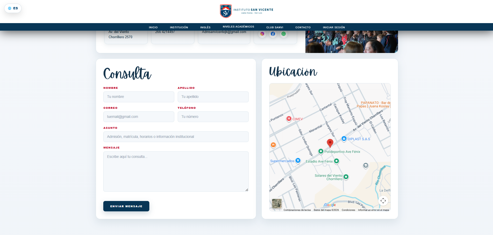
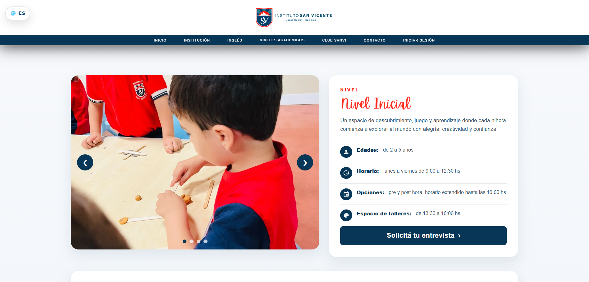
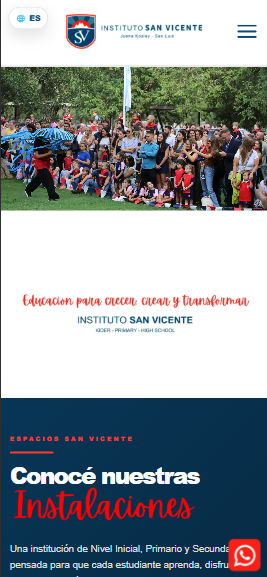

Plataforma web institucional multipage para un colegio privado argentino. Cubre desde la presentación pública hasta la gestión interna diferenciada por rol, incluyendo un portal deportivo completo y soporte bilingüe.
Funcionalidades
- Autenticación con 3 niveles de rol — Administrador, Directivo y Docente
- Panel de gestión de contenido diferenciado por tipo de usuario
- Secciones académicas por nivel: Inicial, Primaria y Secundaria
- Portal deportivo Club Sanvi con múltiples disciplinas
- Galería de fotos con lightbox y navegación por teclado
- Formulario de contacto con envío real de emails (Resend API)
- Soporte bilingüe Español / Inglés integrado sin librerías externas
- Diseño responsive optimizado para mobile, tablet y desktop